Analysis
Filtering and interpolation
A recorded run usually contains GPS coordinates, elevation, heart rate (HR), and cadence values with timestamps.
These measurements, collected by wearable devices or smartphones, are often noisy and can contain anomalies caused by poor satellite reception, urban environments, tunnels, tree cover, or temporary signal loss. These anomalies can appear as spikes or drops in graphs and as sudden jumps or flashes in animations, so they need to be reduced before the data can reliably drive a visual system.
As an initial exploration, I compared different approaches to reconstructing and smoothing the signal. Catmull–Rom interpolation was used to generate continuous values between samples, while Gaussian smoothing and moving averages were tested as filtering methods for reducing short-term noise and spikes.
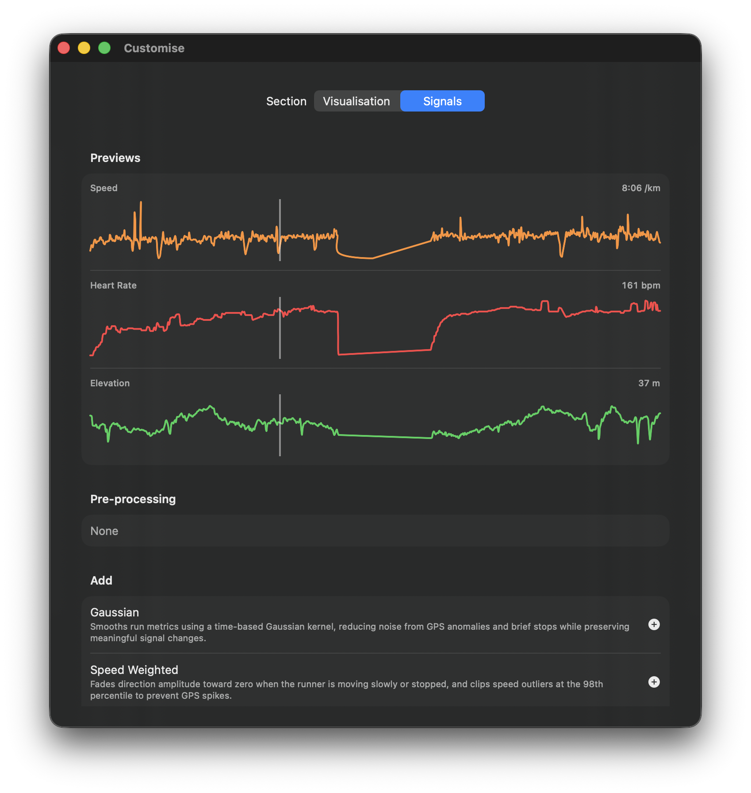
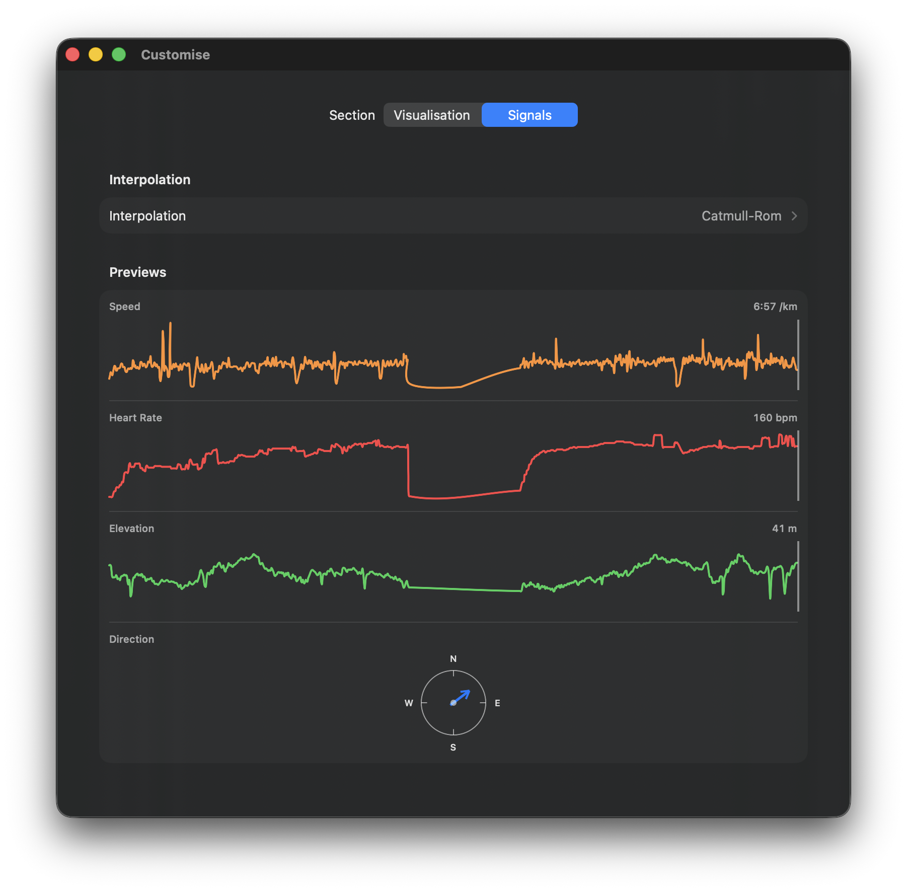
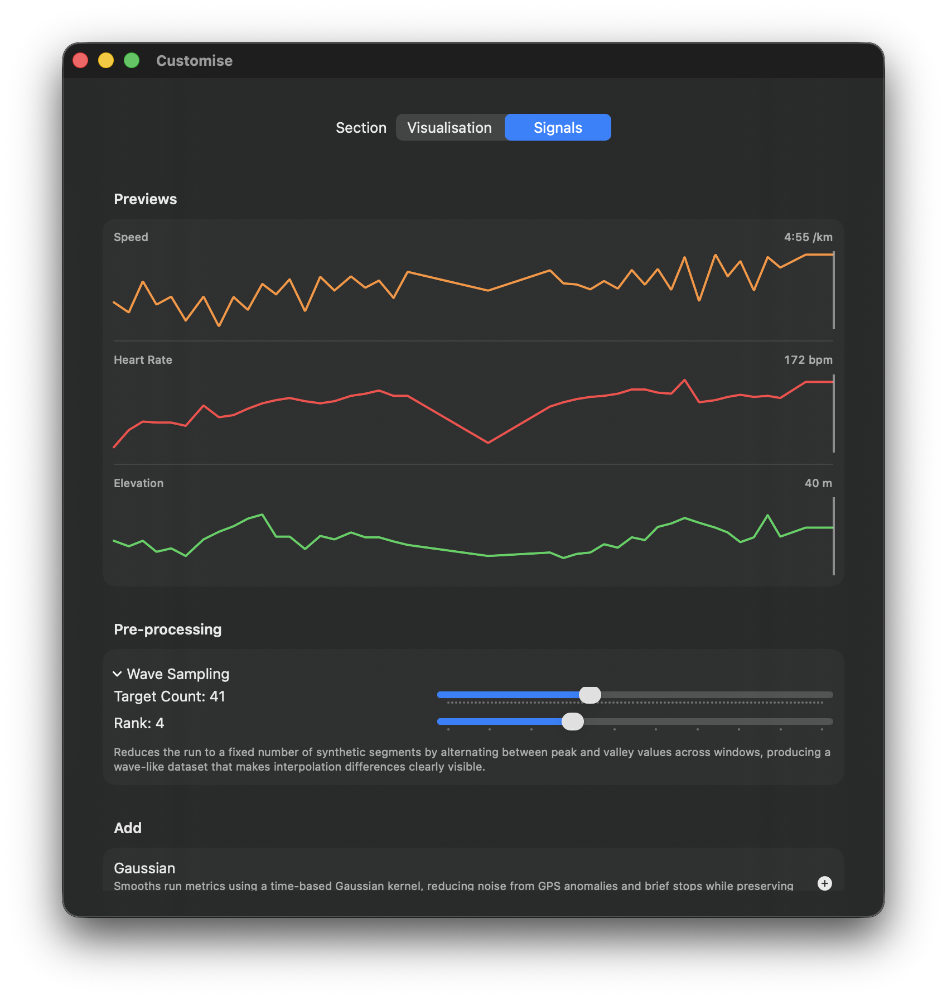
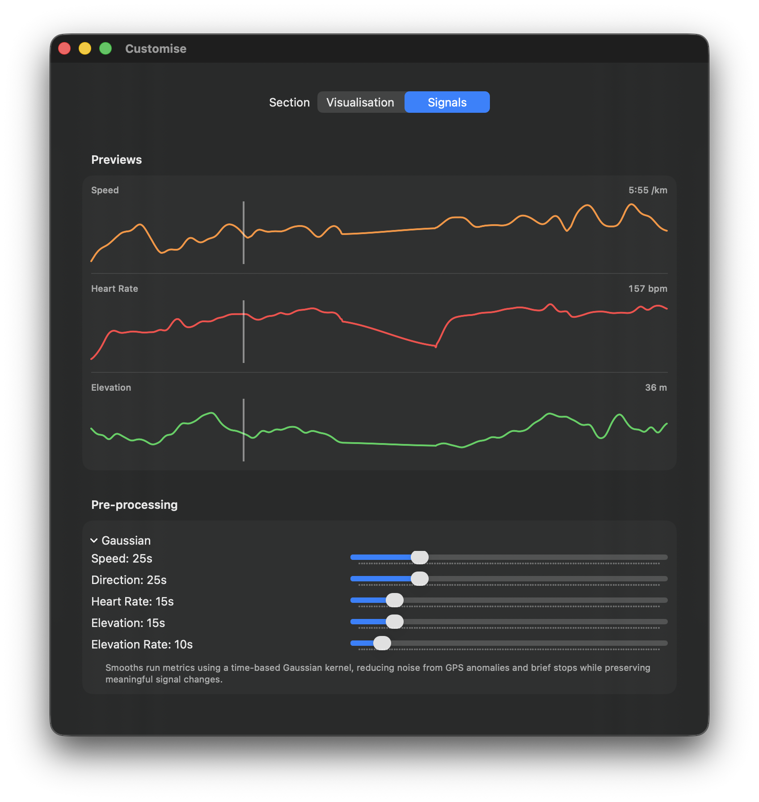
Smoothing the signal too aggressively can remove not only anomalies but also meaningful characteristics of the run. The aim is therefore to reduce distracting short-term noise while preserving changes that matter to the final visualisation.
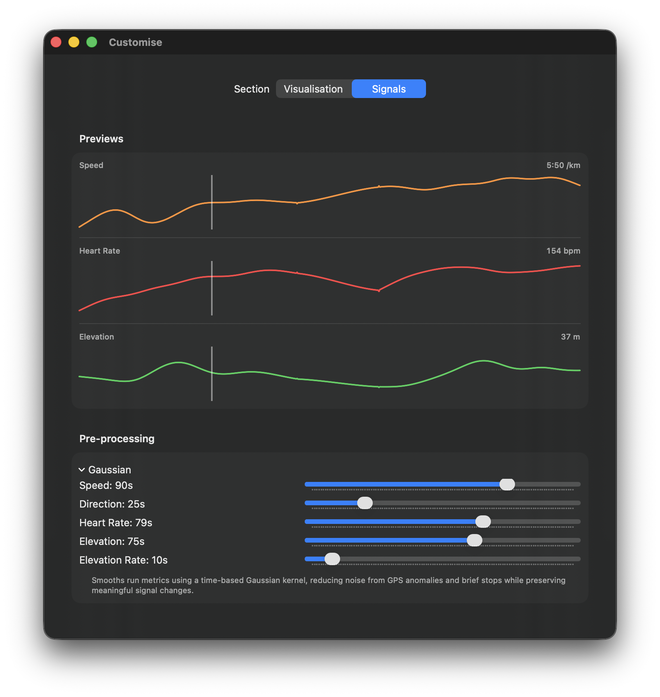
The current filtering pipeline is sufficient for proof-of-concept visualisations, while more sophisticated approaches remain an area for further investigation. One future direction is to evaluate methods such as Kalman filtering and compare how effectively they preserve meaningful behaviour while suppressing measurement noise.
Perception engine
The goal of signal analysis is not simply to make the data visually cleaner. The amount of smoothing is determined by the intended output: a long physical activity compressed into a short animation. Different interpolation and filtering configurations can produce very different visual behaviours.
A typical run may last from several minutes to several hours, while the final visualisation is intended to be around 15–60 seconds long. Directly mapping raw sample-to-sample changes into animation parameters would therefore exaggerate short-term fluctuations. Even an easy, steady run could produce rapid, flashy, and visually unstable motion. The processed signal should avoid this while preserving meaningful transitions once the run is compressed in time.
The next stage of the project investigates a higher-level abstraction. Individual measurements such as pace, heart rate, cadence, elevation, and direction are not themselves the experience of running. The aim is to combine and transform these signals into longer, more coherent perceptual segments.
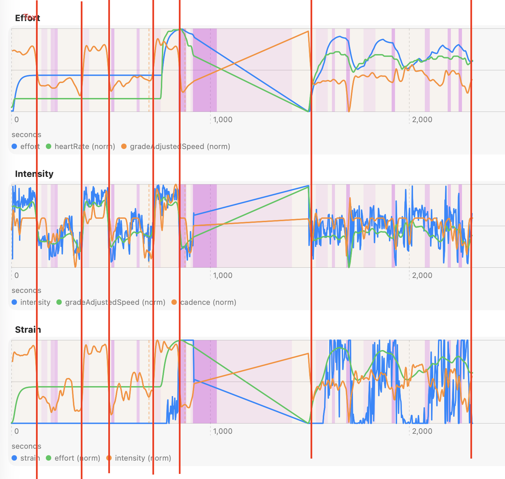
The purpose of the perception engine is not to classify a run into rigid labels, but to create a smoother intermediate representation that can drive the visual system.
Processing pipeline
The longer-term goal is to develop the processing pipeline approximately as follows:
Raw measurements ↓ Filtering — anomaly removal ↓ Interpolation / smoothing ↓ Perceptual segments ↓ Generative parameters ↓ Animation
The current investigation focuses on how multiple signals can be combined into temporally coherent segments so that the animation responds to the broader character of the run rather than reacting mechanically to individual measurements. The experiments so far have not yet produced sufficiently coherent segmentation, making this one of the project's main open research questions. An alternative approach I would like to explore is manually classifying selected runs and using those examples to train a model for future segmentation.
Synthesis
Once the input signal is stable enough, the next question is how to translate it into expressive visual behaviour.
Generative visual vocabulary
I began exploring procedural graphics techniques that can produce continuous, organic motion while remaining fully parameterised. Following several of Inigo Quilez's articles, I experimented with pseudo-random continuous fields as a basis for generating visual motion.
A fundamental building block is gradient noise, where the interpolation between pseudo-random values must be chosen carefully to avoid visible friction in the animation caused by discontinuous first derivatives. In his gradient noise article, Inigo Quilez demonstrates polynomial interpolation functions that produce smoother gradients.
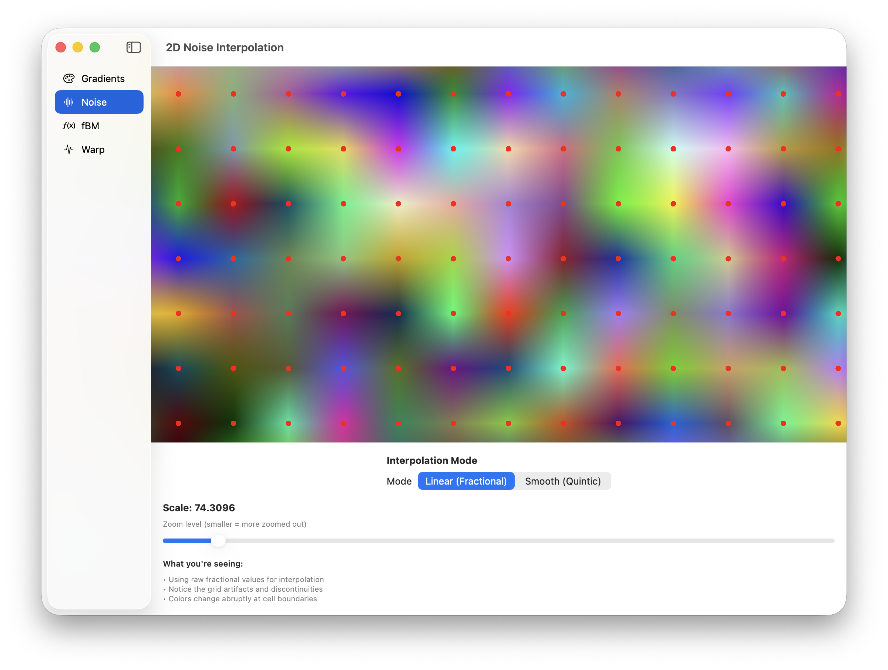
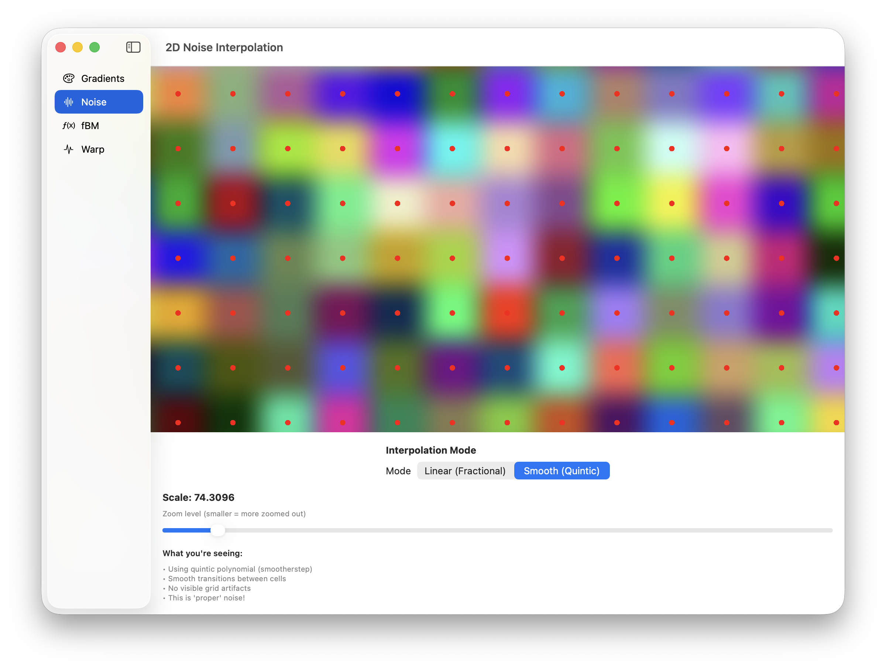
Fractal Brownian Motion builds on noise by combining several layers at different frequencies. This produces richer structures with detail at multiple scales. Changing frequency, amplitude, octave count, and persistence affects the perceived energy and complexity of the visual field.
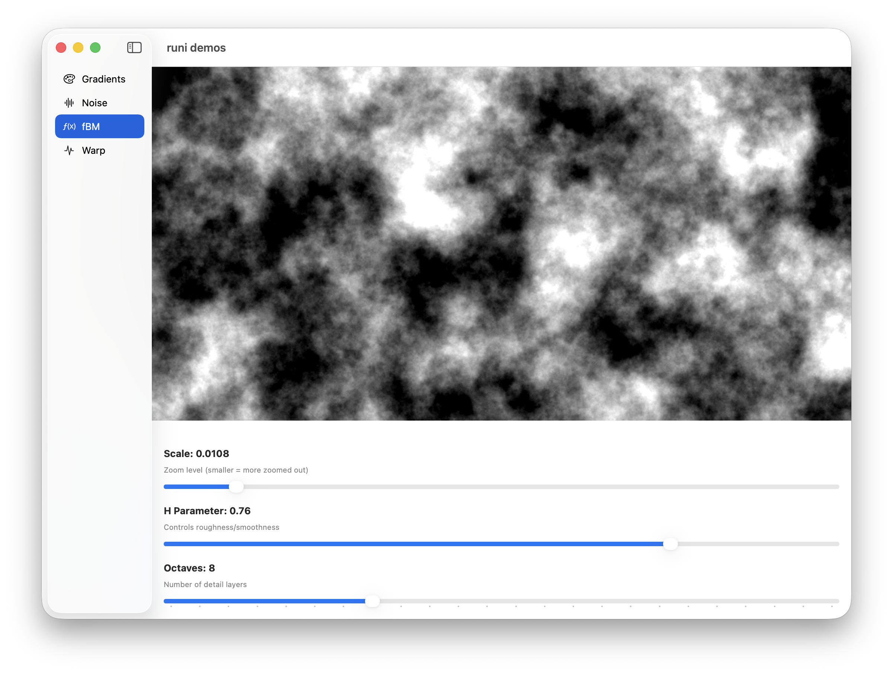
The next step was using domain warping to distort the coordinates used to sample another procedural field. Instead of adding detail directly, domain warping bends and reshapes the underlying space. Connecting different running metrics to the warping, for example speed to amplitude, HR to octave count, and direction to sampling displacement, became particularly interesting because distortion itself could be used as a visual representation of effort, instability, or changing perception during a run.
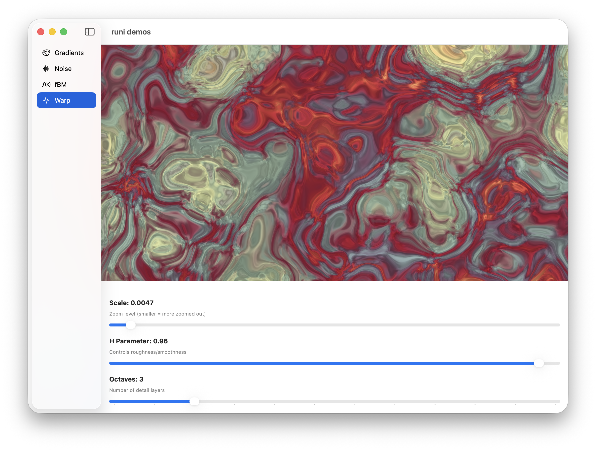
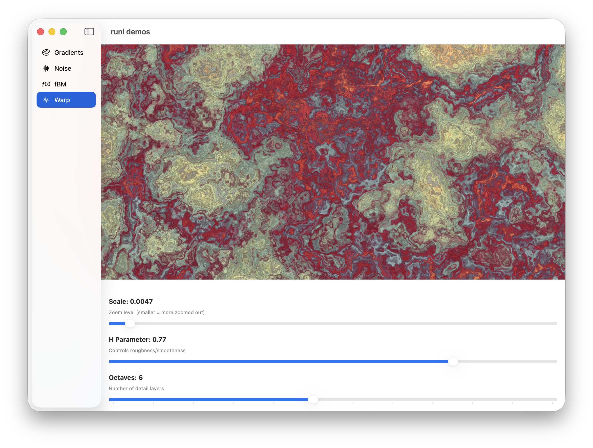
Although I found these visuals aesthetically pleasing and knew that their behaviour was driven by the run, the connection remained too abstract to perceive intuitively. This led me to explore simpler representations that retain some abstraction while making their relationship to the activity easier to grasp.
Distorting geographic space
To make the visualisation more immediately relatable, I applied domain warping to one of the most recognisable representations of a run: the route itself. A running map tells us where the athlete went, but not what the journey felt like. The experiment investigates whether the route can become part of the expressive visual system rather than remaining a neutral geographic trace.
Because the geographic information remains recognisable, the visualisation is easier to relate to. At the same time, the distortion becomes more meaningful because I can associate particular deformations with specific parts of the run.
Emerging botanical forms
I would like to find a balance between representations that are highly abstract, such as a distorted noise field, and those that are immediately obvious, such as a distorted run path. A blooming flower or developing plant offers a possible middle ground.
It grows and changes over time; it can reach its prime, or go beyond it and wilt or wither. In a similar way, a run can unfold according to plan, exceed its intended effort, deteriorate, or even be abandoned. A blooming flower is particularly interesting because it naturally contains growth, repetition, variation, hierarchy, symmetry and asymmetry, and temporal development. A single generative system could therefore produce a large number of unique, personalised animations while still providing a recognisable visual metaphor.
This led to an investigation of procedural flower construction using Signed Distance Fields (SDFs) and fragment shaders.
Cherry blossom study
The cherry blossom experiment investigates how a flower can be constructed from a small number of parameterised geometric and procedural rules. The system developed through several stages: from the base two-dimensional petal geometry, through surface-elevation maps and shadow casting, to pseudo-random variation, venation, and finer structural detail.
Petal geometry and surface development
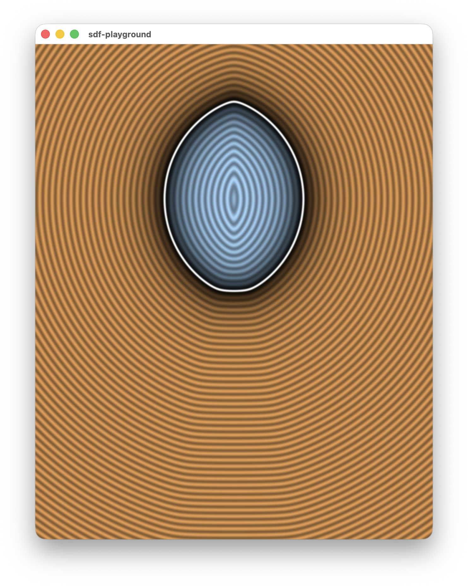
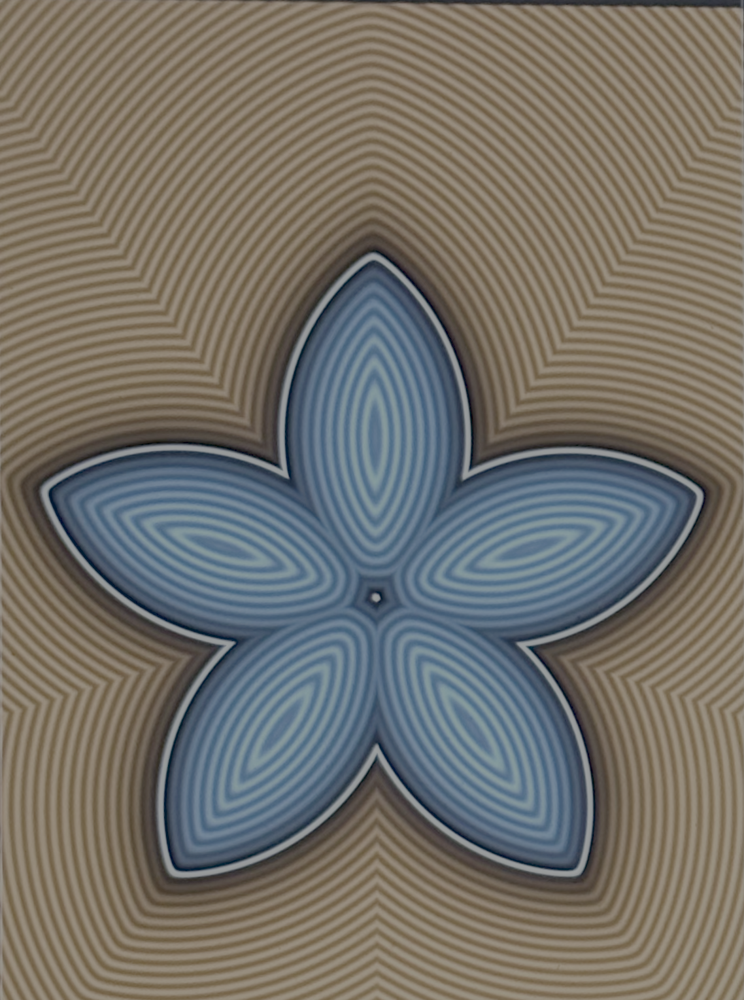
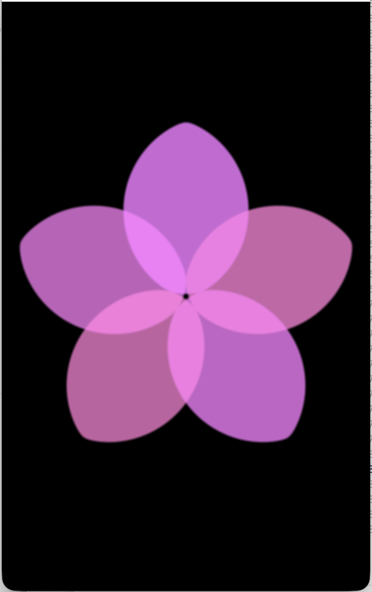
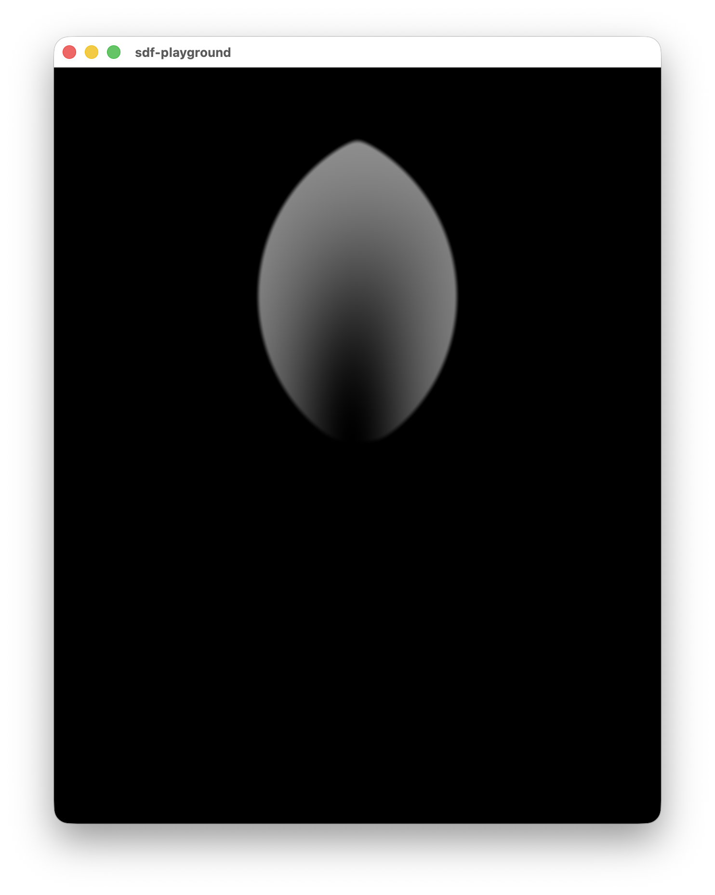
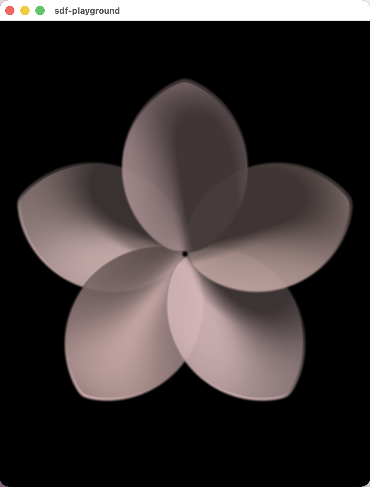
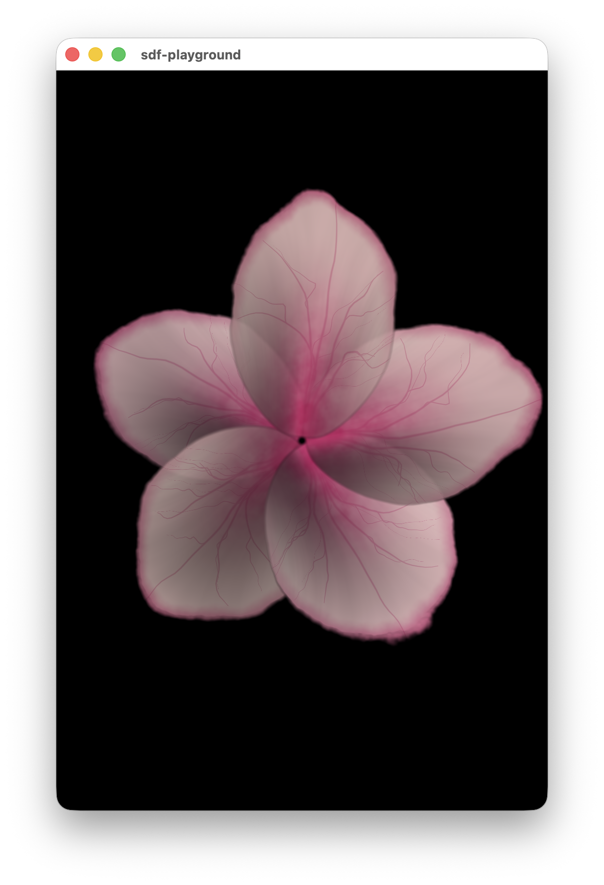
Rather than modelling a flower manually, the goal is to understand how increasingly complex botanical structure can emerge from reusable computational rules. This investigation is still at an early stage, with several open questions:
- How should petals change during growth?
- How can venation follow the material structure of a petal?
- How can local variation create natural irregularity without destroying the underlying form?
- How might running data influence the growth, motion, or appearance of the flower?
Hungarian Kalocsai ornament as a generative system
The next investigation moves from natural botanical form to a cultural interpretation of flowers. Traditional Kalocsai embroidery uses stylised flowers, leaves, branches, repetition, colour, and ornamental hierarchy. The individual flower motifs are comparatively simple to represent using SDFs; the more interesting challenge is how to generate the larger ornamental composition, including branching, placement, and overlap.
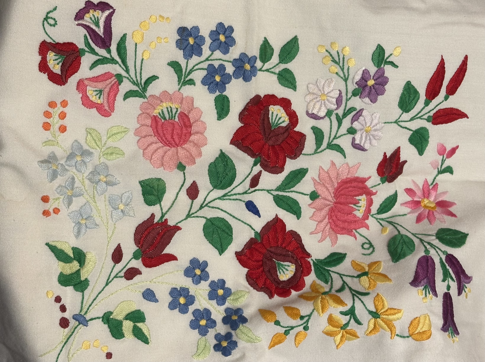
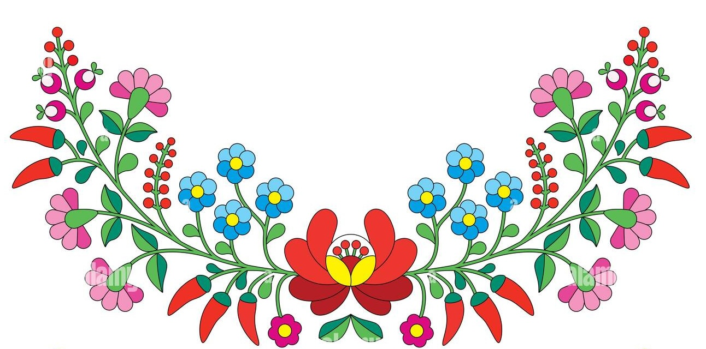
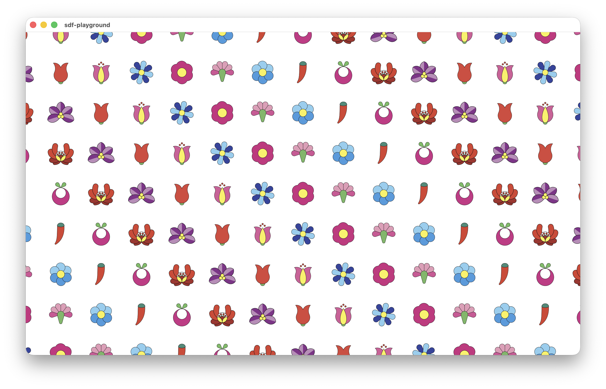
I am exploring whether this visual language can be represented as a parameterised generative system rather than as a fixed illustration, where the overall ornament can follow the run path and motifs can emerge as the run progresses. The aim is to develop reusable elements arranged through rules governing branching, scale, orientation, hierarchy, repetition, and flower and leaf distribution.
So far, I have implemented several individual motifs and am investigating algorithms for generating the branching ornamental arrangement.
The longer-term idea is for properties of the run to influence the composition:
| Running property | Possible visual influence |
|---|---|
| Intensity | Flower size or visual density |
| Direction | Orientation of branches, leaves, or flowers |
| Perceptual segments | Changes in motif type or complexity |
| Route geometry | Overall ornamental composition |
| Individual run identity | Seed for deterministic variation |
This would allow every run to generate a unique pattern while incorporating a visual language connected to Hungarian cultural heritage.
Current direction
The project currently sits between signal processing, procedural computer graphics, computational design, and artistic research. The individual experiments are intentionally exploratory. My goal is not only to create a finished running application, but to better understand the systems connecting:
Physical activity ↓ Measured data ↓ Signal transformation ↓ Perceptual abstraction ↓ Generative rules ↓ Visual / spatial experience
I am particularly interested in how generative systems, morphogenesis, procedural geometry, and interaction can extend this work beyond screen-based animation into shared physical or spatial experiences.
This is the direction I hope to develop further through the Architectural Computation MSc at UCL, particularly through areas such as Computational Synthesis, Morphogenetic Programming, and Digital Ecologies.
References and influences
Technical context
The current experiments are primarily built with:
- Swift / SwiftUI
- Metal fragment shaders
- Signed Distance Fields
- Procedural gradient noise, FBM, and domain warping
- Signal filtering and interpolation
- Deterministic procedural generation
The project is intentionally developed at a low level so that I can understand the underlying computational techniques rather than relying primarily on high-level visual frameworks.